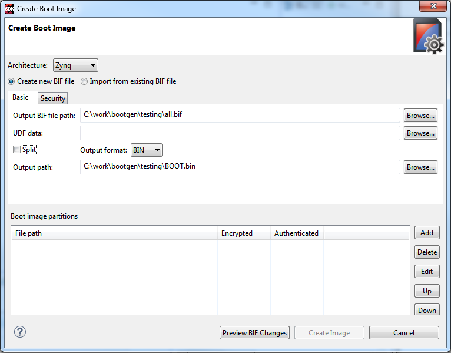
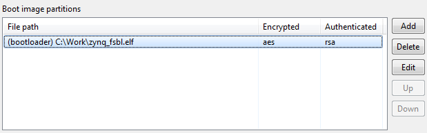
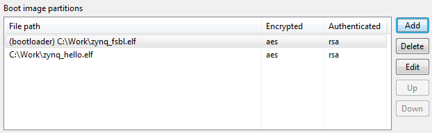

Creating a Boot Image
You can create a boot image for for both Zynq® or Zynq® UltraScale+ ™ MPSoC architectures by performing the following instructions:
- Make sure that the FSBL project and any C application project are created in the SDK workspace and built so that corresponding ELF files are available.
- Select an architecture for which you plan to create a boot image from the Architecture drop down menu. Currently, boot image creation for Zynq and Zynq UltraScale+ MPSoC architectures is supported.
- Select Create a new BIF file.
- Specify the path for creating a BIF file in Output BIF file path . The Output path is automatically populated with same path as that of BIF file path.
- Click the Security tab if you need secure images. For more details on the settings available on the
- Select Use Authentication to enable authentication and select PPK, SPK PSK and SSK values.
- Click the Encryption tab.
-
Select Use Encryption to enable encryption and select the key file and key source.
Note: SPK signature is not required here, as you will provide the secret key PSK.

-
Add the partitions one at a time, starting from the bootloader. For details on settings available on the Add partition page, refer Adding a Partition
- Select the Partition type as “bootloader”.
- Select the FSBL “zynq_fsbl.elf” path.
- Select the authentication as rsa and encryption as aes.
-
Click OK.
Note: Presign is not required when the secret key SSK is specified.
-
Click OK.
Notice that the list in Boot Image Partitions is populated.

-
Add the second partition. For this example, you will add a C application.
- Select the Partition type as datafile.
- Select the application zynq_hello.elf path.
- Select the authentication as rsa and encryption as aes.
-
Click OK.
Notice that the list in Boot Image Partitions is updated with the second partition.

- Click Create Image to create the final boot image output.bin.